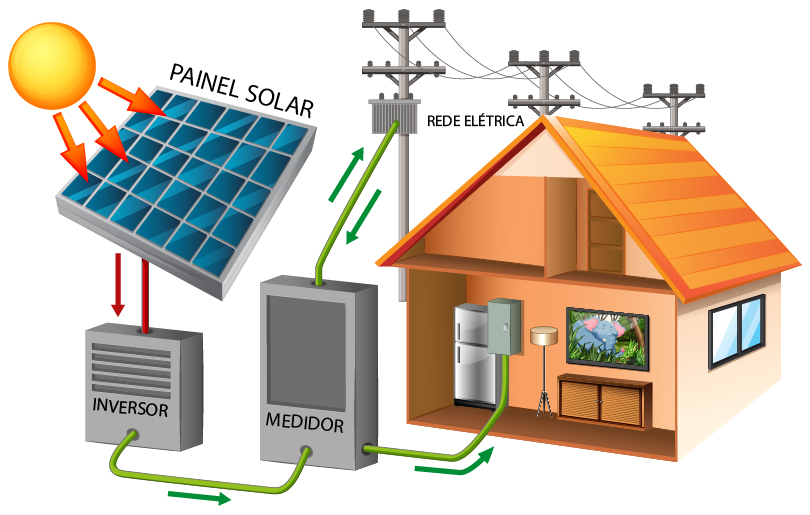

Cálculo de quanto gera energia uma placa solar
Uma placa solar gera energia em função da sua potência (em Watts) e da irradiação solar local. Sabe-se que uma placa de 550W pode produzir entre 82 e 90 kWh por mês em locais com boa irradiação, enquanto uma placa de 700W pode gerar cerca de 91 kWh mensais em cidades como Brasília. Para calcular a geração exata, é preciso considerar a potência da placa, a irradiação solar diária da sua região e a eficiência do sistema.

Potência da placa (Wp): É a potência máxima que a placa pode gerar em condições ideais. Irradiação solar: A quantidade de luz solar que a placa recebe, que varia conforme a localização geográfica e as condições climáticas. Eficiência do sistema: Inclui fatores como a inclinação e a orientação do painel, além de perdas elétricas e a qualidade dos componentes.